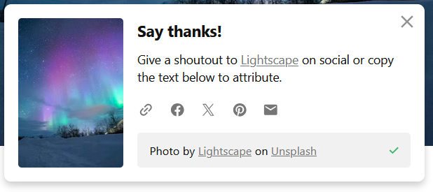
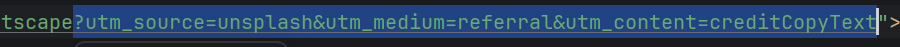

So uh trackers... We all hate them, don't we? I don't want anything to track you while you are on my website. However, it seems like an attempt was made already to put one on my website.
There's this site called Unsplash, and it's cool for getting images ENTIRELY FOR FREE!
You don't even have to credit the photographer and just take the image, however I'm a nice person, so I decided to credit them(as you can see on site's footer).

However, as I went to see the link I found something evil...
what are these evil links????

And indeed, it was an evil tracker... It's apparently good for marketing, but I'm making this website on non-commercial license of WebStorm +
I don't want anyone who visits my site get tracked at all...
It really sucks that you're constantly being tracked online 24/7... especially with fucking mandatory age verification which just wants to strip even more data about you...
and now they're making sure to strip a lot of essential features from you just because you didn't verify your age.
I hope GitHub won't add any age verifying BS soon, considering it's owned by Microsoft.
(Kind of ironic I'm concerned about this as I write on Windows... I need to switch to Linux)
I heard that all of these JavaScript assemblies?(Is that what they're called?) also include a bunch of trackers for no good reason, just let us be free man...
That's my first(and possibly last blogpost), ngl Web development starts to seem more fun than Software development. Although I feel like developing Software would be less evil than Developing Websites, Considering a bunch of these BS Trackers existing nowadays...